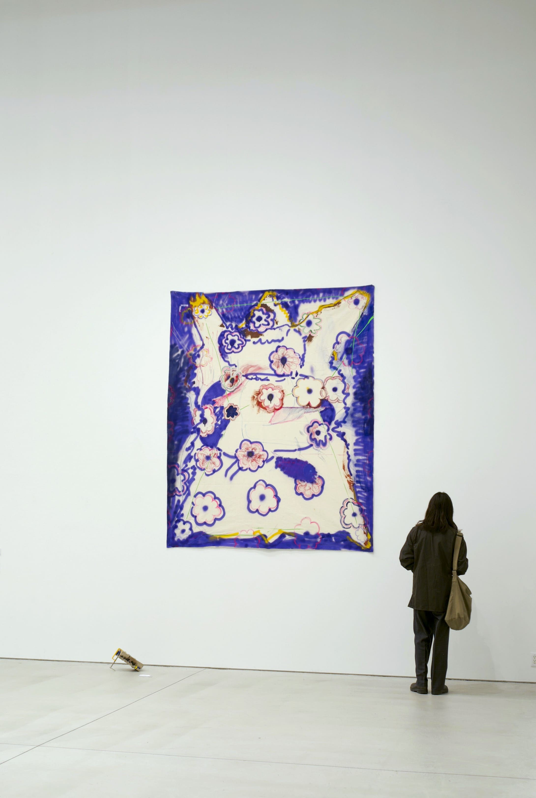

Portfolio — Yuki Abe
Project
Manager
& Producer.
安部 祐生 / Yuki Abe
美術館・ギャラリー・企業ロビーと、現場が変わるたびにPMとしての判断の精度が上がってきた。



Profile
美術館・ギャラリー・企業ロビーと、まったく異なる現場でプロジェクトを動かしてきた。共通しているのは「マニュアルのない環境で自走すること」。
Photo: 修了展示「ガワから空を見る」多摩美術大学大学院 2022
Photo: 修了展示「ガワから空を見る」多摩美術大学大学院 2022
基本情報
安部 祐生（Yuki Abe）
1998年生 · 世田谷区在住
1998年生 · 世田谷区在住
学歴
多摩美術大学大学院
美術研究科 油画専攻 修士課程修了
美術研究科 油画専攻 修士課程修了
資格
中学・高校教諭一種免許（美術）
防火・防災管理者 甲種
普通自動車第一種免許 / 剣道二段
防火・防災管理者 甲種
普通自動車第一種免許 / 剣道二段
スキル
Experience
2025.09 –
現在
現職
現在
現職
医療法人安生会
総務・労務管理（アルバイト / 週3日）
磯崎展終了後、次のステップを模索しながら総務職で実務力を維持中。
2023.11 –
2025.08
2025.08
hiromiyoshii ギャラリー
企画・運営・商品開発・広報 PM（正社員）
展覧会の企画運営から乗馬クラブ再生プロジェクトまで、多岐にわたる事業の進行管理を主導。
2023.04 –
2023.11
2023.11
株式会社カルチュア・コンビニエンス・クラブ
店舗運営・EC販促・VMDアシスタント（アルバイト）
現代美術特化のギャラリー運営部門にてEC販促・空間構成・来場者対応を担当。